MISIÓN BRISA
Barrido Rápido Instrumentado de Sondeo Atmosférico · Sonda Atmosférica de Telemetría
“No buscamos solo alcanzar altura.
Buscamos que cada metro produzca información.”
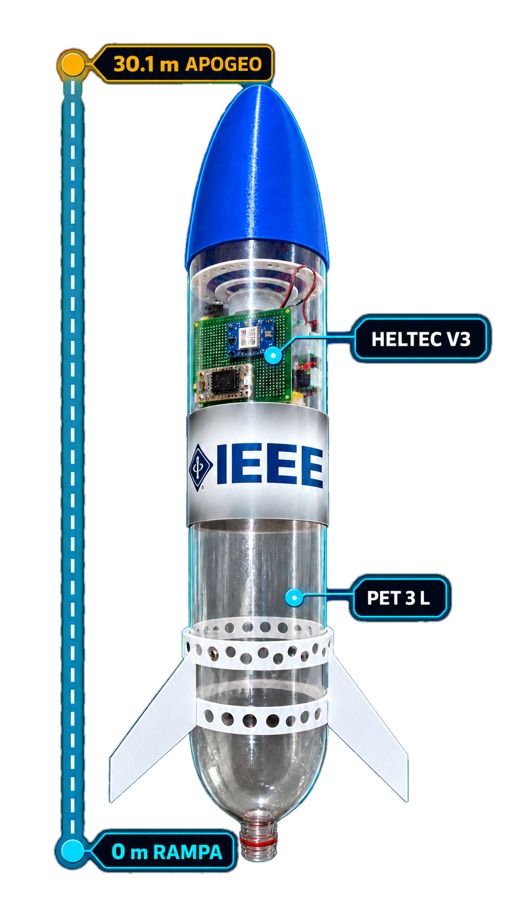
DEL TERRITORIO A LA MISIÓN
Santa Marta: una interfaz costa–montaña con dinámica atmosférica local.
Misión BRISA explora un perfil vertical instrumentado de hasta aproximadamente 30,1 metros. La Sierra Nevada (5.700 m a 42 km del mar) explica el contexto ambiental que inspira la misión; no se afirma medir el gradiente total hasta la cumbre.
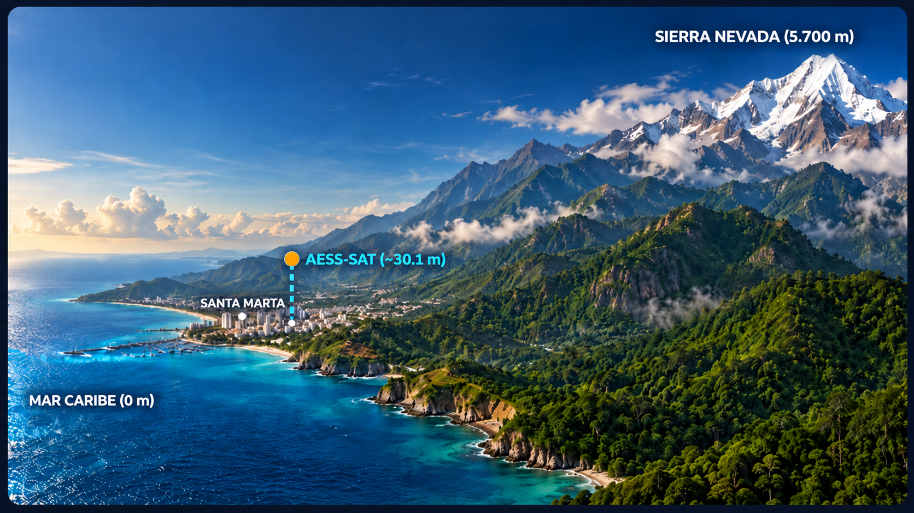
MEDIR
Variables atmosféricas y dinámica de vuelo vertical a alta cadencia.
TRANSMITIR
Telemetría LoRa hacia la estación terrena durante la misión.
RECUPERAR
Vehículo y datos de forma segura para validar la plataforma y repetir el experimento.
ARQUITECTURA AESS-SAT
Despiece modular interactivo: haz clic en cualquier subsistema para inspeccionar su diseño y balance de masa.
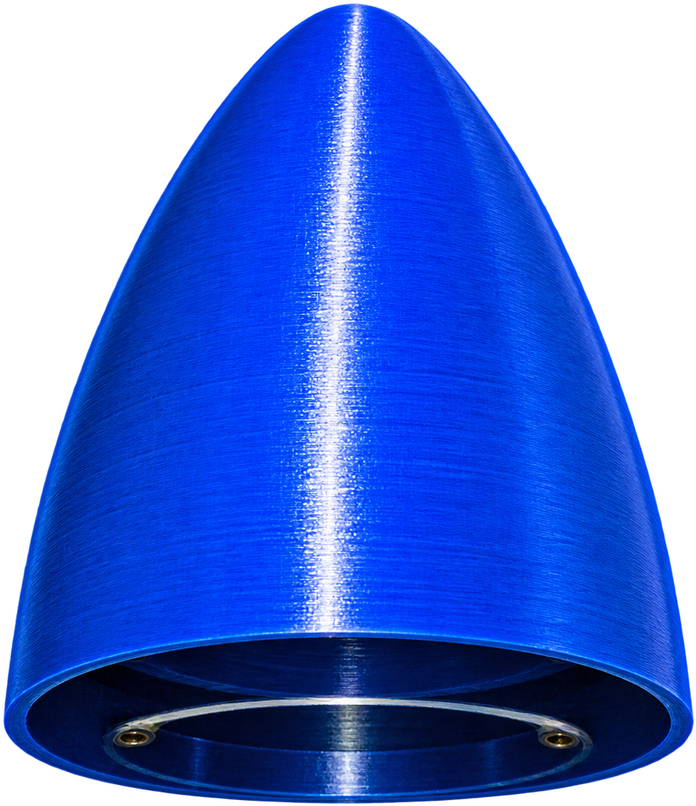
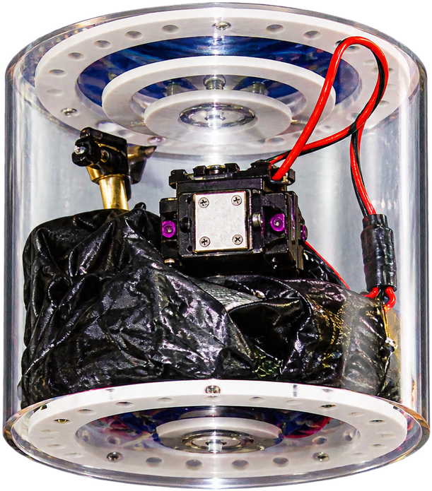
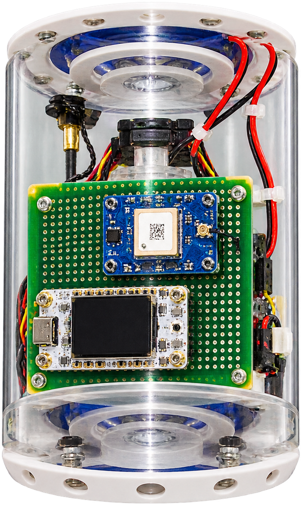
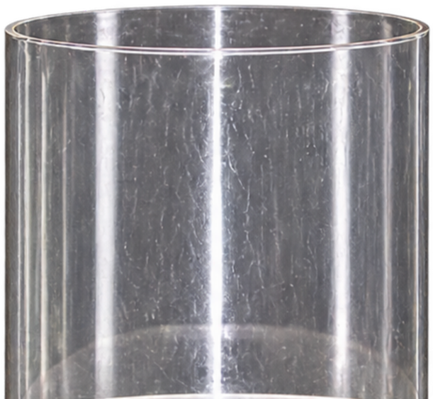
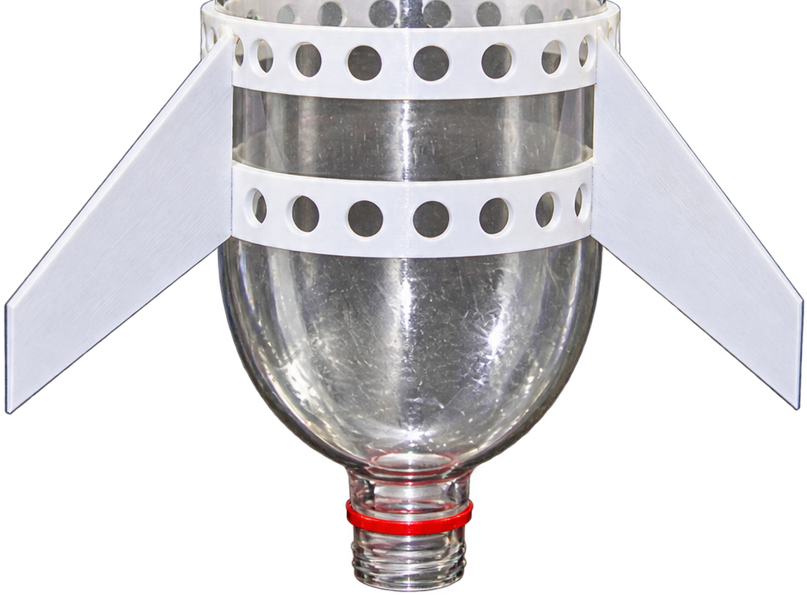
Ojiva Parabólica Roma 3D
Cono de baja resistencia aerodinámica impreso en PLA. Protege la bahía de aviónica y aloja el mecanismo de destrabe.
VOLAMOS CON FÍSICA, NO CON SUPOSICIONES
La energía se acumula en el aire comprimido; la expulsión de masa de agua genera empuje por cantidad de movimiento.
Mecánica de Fluidos y Empuje
El aire comprimido actúa como acumulador elástico de energía. Al abrirse la tobera, el agua es acelerada violentamente generando el impulso principal.
Margen Estático: CG por delante de CP
Estabilidad pasiva suficiente para que el flujo de aire genere un momento restaurador continuo sin control activo.
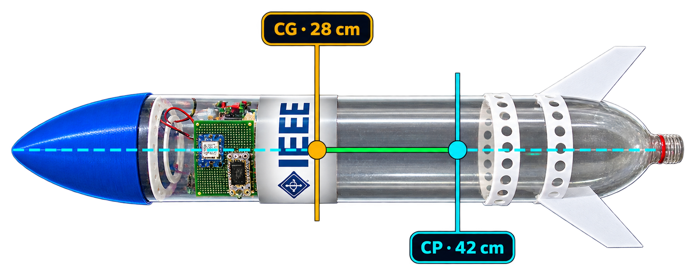
EL COHETE VUELA. EL NÚCLEO CUMPLE LA MISIÓN.
Diagrama de arquitectura del computador de vuelo y asignación de buses de comunicación.
HELTEC WIFI LORA 32 V3
CICLO DE VIDA DEL DATO
GY-91 y GPS adquieren las variables. La Heltec procesa y transmite por LoRa 915 MHz, mientras la ESP32-CAM graba el video del vuelo. La estación terrena se comunica además por ESP-NOW con la ESP32-CAM y la Heltec.
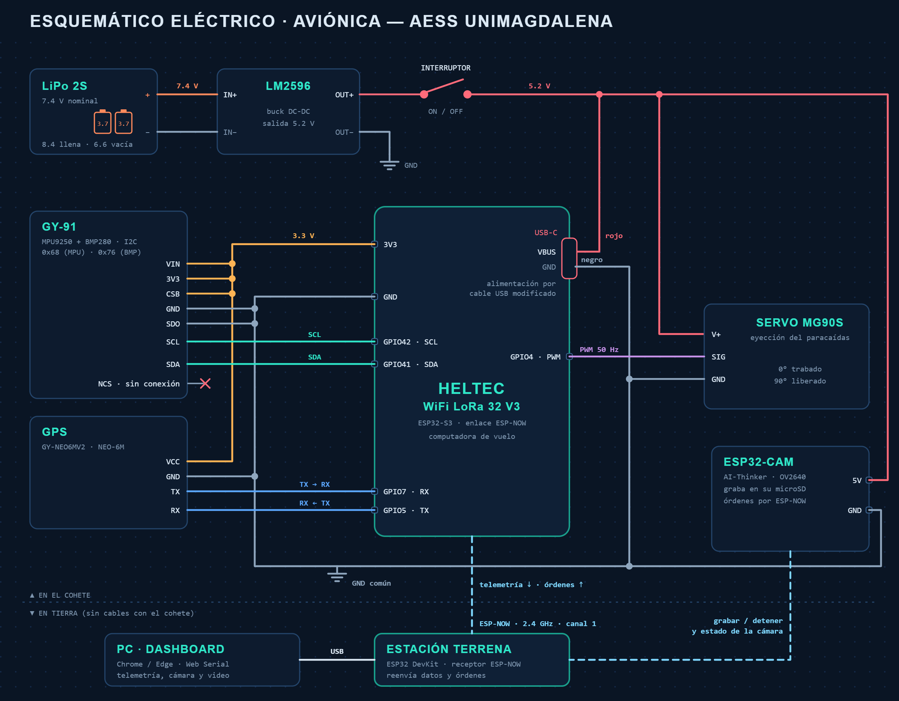
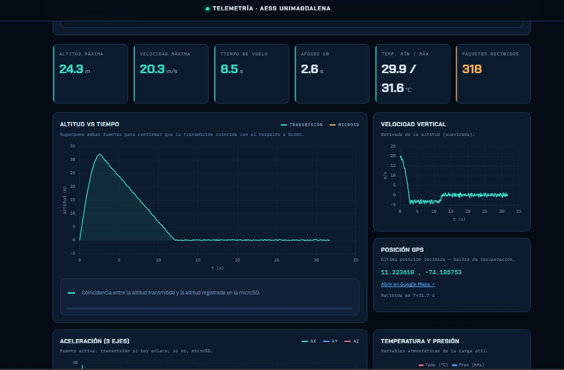
OBTENER EL DATO NO BASTA. HAY QUE TRAERLO DE VUELTA.
Lógica de detección de apogeo en 5 etapas secuenciales para evitar aperturas prematuras.
Paracaídas Ø75 cm
Velamen circular de nylon ripstop con líneas de suspensión simétricas. Diseñado para desacelerar la masa total sin daño estructural en el impacto.
DE UN VUELO A UN PERFIL ATMOSFÉRICO
Simulador interactivo con telemetría sincronizada multivariable.
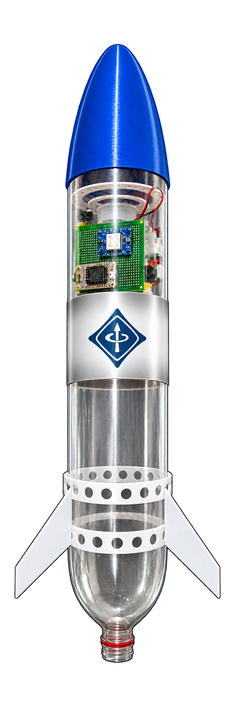
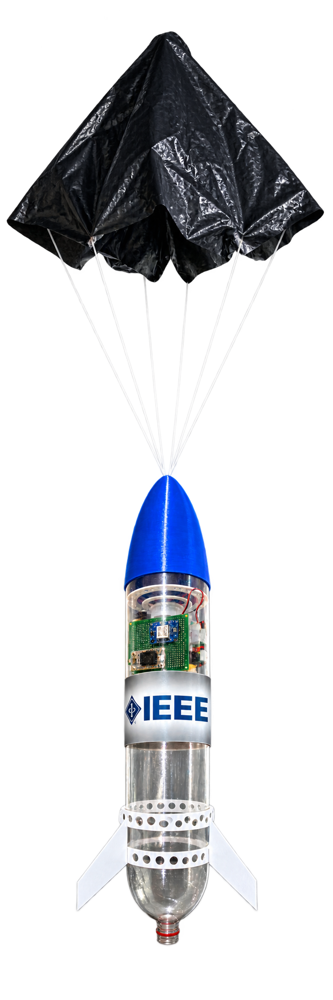
CRITERIOS DE ACEPTACIÓN
Cinco verificaciones determinan el cumplimiento técnico de la misión.
Masa y Talla
Estabilidad
Telemetría LoRa
Recuperación
Instrumentación
datos.js.
APRENDER DE LOS RESULTADOS Y EVOLUCIONAR
Consolidación técnica del vehículo experimental y hoja de ruta para la evolución de la plataforma.
¡MUCHAS GRACIAS!
PRESUPUESTO DE MASA
Desglose analítico de masa por subsistema frente al límite reglamentario de 400 gramos.
Desglose de Masa por Subsistema
| Subsistema | Componentes | Masa (g) |
|---|---|---|
| 01. Ojiva Aerodinámica | Parabólica roma impresa en 3D (PLA) | — |
| 02. Aviónica & Sensores | Heltec WiFi LoRa 32 V3 + GY-91 + GPS NEO-M8N + LiPo 1S | — |
| 03. Recuperación | Paracaídas circular Ø75 cm + servo MG90S | — |
| 04. Fuselaje / Cámara | 2 botellas PET de 3 L en serie (cámara 3 L) | — |
| 05. Propulsión & Aletas | 3 aletas trapezoidales (120°) + tobera hidroneumática | — |
| TOTAL MASA FINAL | Masa seca total del vehículo | 335 g |
Masa y Dimensiones Maestras
El vehículo experimental AESS-SAT fue dimensionado estrictamente bajo el reglamento de Hidrochallenge Colombia 2026:
- Masa final: 335 g (Límite reglamentario: ≤ 400 g).
- Altura total: 65 cm.
- Diámetro de fuselaje: 12 cm.
- Etapas: 1 etapa hidroneumática.
ESTABILIDAD: CG, CP Y CALIBRES
Metodología de equilibrio físico y margen de estabilidad estática para ascenso pasivo.
Centro de Gravedad (CG) vs Centro de Presión (CP)
Para que un cohete pasivo sea estable durante el ascenso, el Centro de Gravedad debe estar situado por delante del Centro de Presión aerodinámica a lo largo de todo el vuelo.
Margen Estático = (42 - 28) / 12 ≈ 1,17 calibres.
Efecto del Vaciado de Agua en el Vuelo
En cohetería hidroneumática el centro de gravedad migra hacia adelante a medida que el agua es expulsada de la tobera inferior, lo que incrementa la estabilidad estática durante la fase balística.
RECUPERACIÓN: ECUACIÓN DE DESCENSO
Modelo de dinámica de descenso, velocidad al despliegue y aterrizaje.
Ecuación Terminal de Arrastre
Especificación del Servomotor MG90S
- Torque de retención: 2.2 kg·cm a 4.8V.
- Engranajes: Aleación metálica resistente a aceleración de despegue.
- Consumo de pico: ~450 mA durante carrera de liberación.
- Alimentación: Batería LiPo 1S integrada.
ESQUEMÁTICO ELÉCTRICO & ARQUITECTURA DE AVIÓNICA
Circuito real de vuelo: distribución de potencia, regulación con LM2596, buses I²C/UART/SPI y servomotor MG90S.
TELEMETRÍA LORA: CICLO DE VIDA DEL DATO
Flujo de adquisición, empaquetado binario, enlace RF 915 MHz y video de vuelo con ESP32-CAM.
Flujo de Datos de Misión
2. Heltec V3 procesa y empaqueta en binario compacto
3. ESP32-CAM graba en paralelo el video del vuelo
4. Transmisión inalámbrica por LoRa 915 MHz (SX1262)
5. Enlace ESP-NOW (2,4 GHz): estación terrena ↔ ESP32-CAM + Heltec
6. Recepción en Heltec receptora y despliegue en laptop
Parámetros del Enlace LoRa 915 MHz
- Frecuencia central: 915 MHz (Banda ISM).
- Módem RF: Semtech SX1262 integrado en Heltec V3.
- Video de vuelo: ESP32-CAM (OV2640) a bordo.
- Enlace complementario: ESP-NOW 2,4 GHz desde la estación terrena hacia la ESP32-CAM y la Heltec.
- Estación terrena: Heltec V3 + Laptop con telemetría en vivo.
- Línea de vista directa en todo el perfil de ascenso (0 a 30.1 m).
CALIBRACIÓN E INCERTIDUMBRE INSTRUMENTAL
Rango, resolución y fuentes de error de la suite de sensórica embarcada.
| Sensor | Variable Oficial | Rango | Resolución / Precisión | Incertidumbre Típica |
|---|---|---|---|---|
| GY-91 | Presión atmosférica / Altitud | 300 a 1100 hPa (0 a 30.1 m) | 0.16 Pa / ±1.0 hPa | ±0.8 m en altitud relativa |
| GY-91 | Aceleración triaxial (XYZ) | ±2g, ±4g, ±8g, ±16g | 16-bit ADC | ±0.05 g tras calibración de offset |
| GY-91 | Temperatura | -40 a +85 °C | 0.01 °C | ±1.0 °C |
| GPS NEO-M8N | Latitud y Longitud | Global GNSS (GPS/GLONASS) | Horizontal: ~2.5 m CEP | Dependiente de satélites visibles en rampa |
MATRIZ DE REQUISITOS REGLAMENTARIOS
Verificación de cumplimiento frente al reglamento oficial de Hidrochallenge Colombia 2026 (Categoría Universidades).
| Parámetro Oficial | Límite Reglamentario | Especificación AESS-SAT | Estado |
|---|---|---|---|
| Etapas del Vehículo | Exactamente 1 etapa | Cohete de 1 sola etapa hidroneumática | CUMPLE |
| Botella / Cámara | Botella PET hasta 3 litros | 2 botellas PET de 3 L en serie (cámara 3 L) | CUMPLE |
| Presión de Lanzamiento | Máximo 70 PSI (Límite oficial estricto) | Operación estricta ≤ 70 PSI | CUMPLE |
| Dimensiones | Diámetro ≤ 12 cm | Altura: 65 cm · Diámetro: 12.0 cm | CUMPLE |
| Masa Seca Máxima | ≤ 400 gramos (sin agua) | 335 g (Masa final del vehículo) | CUMPLE |
| Variables Sensadas | Altitud, Temp, Presión, Acc XYZ, GPS | GY-91 + GPS NEO-M8N (6 variables oficiales) | CUMPLE |
| Estabilidad / Empenaje | Estabilidad pasiva suficiente | 3 aletas trapezoidales a 120° (Margen 1,17 calibres) | CUMPLE |
| Recuperación | Paracaídas obligatorio | Paracaídas circular Ø75 cm con servo MG90S (Aterrizaje: 3,4 m/s) | CUMPLE |